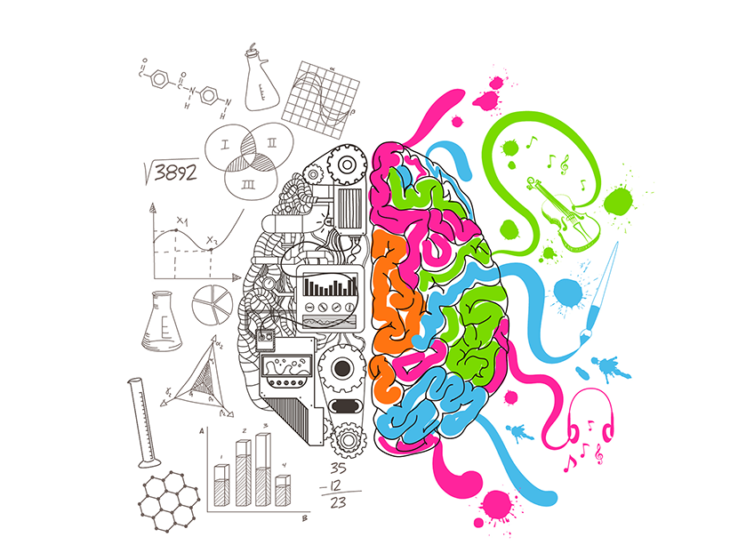

O cérebro humano é a estrutura biológica mais complexa que se tem conhecimento. A ação dos seus quase 100 bilhões de neurônios, formando trilhões de sinapses (comunicação entre os neurónio) ainda é fruto de muita investigação e descobertas por parte da ciência. Nessa pauta bem interessante vamos discutir algumas curiosidades desse sistema fantástico. O cérebro é o órgão mais complexo do corpo, coordena a percepção de mundo e a tomada de decisões. À distância, recebe informações internas e externas ao corpo e além dos movimentos musculares, comenda boa parte da função de outros órgãos, como o coração, pulmões, sistema endocrinológico e imunológico.
45 Curiosidades:
1. Cerca de 75% da massa total do cérebro é composta por água.
2. Pesando mais ou menos 1,5kg, representa de 2 a 3% da massa corporal, consome cerca de 20% do nosso oxigênio e de 15 a 20% da glicose.
3. Ele pode arquivar o equivalente a 1.000 terabytes de informações.
4. O cérebro possui mais conexões do que o número de estrelas em nossa galáxia.
5. Existem de 80 a 100 bilhões de células nervosas no cérebro.
6. Somos capazes de escanear e processar imagens complexas em até 13 milissegundos.
7. As redes neurais artificiais (RNAs), que são modelos computacionais inspirados pelo sistema nervoso central, precisam de 40 minutos para processar o que o cérebro leva apenas um segundo.
8. Mais de 160.000 quilômetros de vasos sanguíneos se espalham pelo cérebro humano, o suficiente para dar a quatro voltas na Terra.
9. O hemisfério esquerdo tem quase 200 milhões de neurônios a mais que o direito.
10. O tamanho de um neurônio varia entre quatro e 100 micrômetros de largura.
11. Massa cinzenta é o nome das células neurais que estão envolvidas em coisas como a memória, a fala e o controle dos músculos.
12. Embora pensemos que ele seja branco ou cinza, o cérebro de uma pessoa viva tem, na verdade, um tom rosado.
13. O cérebro humano tem a mesma consistência macia de uma barra de manteiga.
14. A massa branca recebe esse nome por causa da mielina, que isola os axônios e aumenta a velocidade dos impulsos elétricos.
15. Os homens têm menos massa cinzenta do que as mulheres, mas têm mais massa branca e fluido cérebro espinhal.
16. Mais quantidade de massa cinzenta pode levar a um melhor desempenho em tarefas de linguagem.
17. A massa cinzenta é importante durante a prática de exercícios, porque permite que você pense e se movimente simultaneamente.
18. Pesquisas sugerem que a prática regular de exercícios pode levar ao aumento de massa cinzenta no hipocampo.
19. A mielinização ocorre durante o processo de aprendizagem. Ela permite que você desenvolva habilidades específicas como tocar instrumentos e, quanto mais prática, mais sua mielina aumenta.
20. Mais da metade do cérebro, incluindo a mielina, é composta por gordura.
21. A massa cinzenta compõe cerca de 40% do cérebro, os outros 60% são formados pela massa branca.
22. O núcleo accumbens é uma das áreas centrais mais profundas do cérebro e imagina-se que ali estejam os segredos sobre porque nos apaixonamos.
23. O núcleo accumbens é o lugar onde as vias de dopamina, serotonina, oxitocina e vasopressina – os neurotransmissores que estariam envolvidos no amor – convergem.
24. Com cerca de 1,2kg, o cérebro de Albert Einstein era um pouco menor que a média. Poucas horas depois de sua morte, seu cérebro foi retirado, cortado em 240 partes e preservado em jarros com formaldeído.
25. A velha premissa de que "nós só usamos 10% do nosso cérebro" é um mito, nós usamos perto de 100%.
26. O cérebro em repouso produz energia suficiente para acender uma lâmpada de 25 watts.
27. O cérebro não tem receptores de dor, é por isso que neurocirurgias podem ser feitas enquanto o paciente está acordado.
28. As rugas do cérebro, chamadas de Gyri, aumentam sua área, permitindo que armazenemos mais memória.
29. Quando você não dorme o suficiente, fica sujeito à perda de memória, raiva, alucinações, perda de foco, fala arrastada, encolhimento e até à danos cerebrais.
30. A privação de sono também aumenta a temperatura cerebral.
31. Há uma teoria amplamente aceita de que bocejar ajuda a esfriar o cérebro.
32. Durante o sono, os resíduos no interior do cérebro são movidos para o fluido espinhal e distribuídos para outras partes do corpo, onde são eliminados.
33. A região do cérebro que controla o vômito, a área postrema, é a única imune à barreira hematoencefálica, estrutura de permeabilidade altamente seletiva que protege o Sistema Nervoso Central, permitindo que o cérebro detecte substâncias nocivas presentes no sangue.
34. A barreira hematoencefálica protege contra lesões e doenças bloqueando a entrada de partículas no cérebro, mas também faz com que seja difícil detectar problemas neurológicos.
35. Nos primeiros anos de vida, de 700 a 1.000 novas conexões entre os neurônios se formam a cada segundo.
36. Baseados em estudos de imagens, neurocientistas afirmam que o cérebro não está completamente maduro até os 25 anos.
37. A amígdala, parte que processa as emoções, também é responsável pela reação de “luta ou fuga” a um estímulo ameaçador.
38. O lobo frontal lida com uma série de funções para a tomada de decisões. Os lobos parietal e temporal processam novas informações sensoriais.
39. O cerebelo coordena os movimentos.
40. Extroversão, curiosidade e otimismo são características regidas por regiões do lado direito do seu cérebro.
41. Embora pareça algo muito difícil de acreditar, é possível sobreviver com apenas metade do cérebro.
42. Estamos 50 anos atrasados na compreensão de como o cérebro funciona em comparação com os outros órgãos. É por isso que a GE está trabalhando para melhor mapear as conexões dentro de sua mente com seus equipamentos de diagnóstico por imagem!
43. Pesquisas mostram que quando uma pessoa que está apaixonada é colocada em um aparelho de ressonância e vê uma imagem da pessoa amada, áreas profundas do cérebro acendem.
44. O riso é um fenômeno unicamente humano (não, hienas não riem porque acham graça de algo), que começa a partir dos quatro meses de idade.
45. Kashmea Wahi, uma estudante de 11 anos do Reino Unido, obteve o resultado máximo em um teste de QI destinado a adultos, somando 162 pontos. Isso a coloca dois pontos acima de gênios como Stephen Hawking e Albert Einstein.